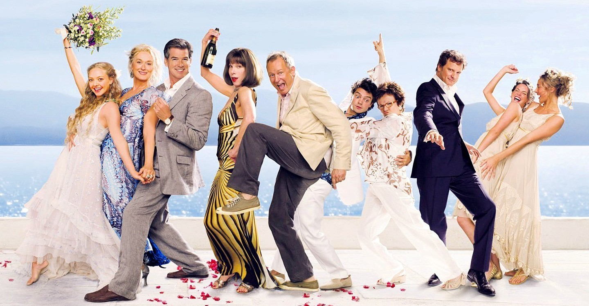

De film kwam uit op 3 juli 2008 in Griekenland, 10 juli in het Verenigd Koninkrijk en 18 juli in de Verenigde Staten. Mamma Mia! werd genomineerd voor onder meer twee Golden Globes (voor beste 'komedie of musical' en beste hoofdrolspeelster in dat genre - Meryl Streep), twee BAFTA Awards (beste muziek en beste Britse film) en voor een Grammy Award (beste filmmuziek). Streep won daadwerkelijk een People's Choice Award voor haar vertolking van het lied Mamma Mia. Zowel dat nummer als alle andere in de film zijn versies die door de acteurs zelf werden ingezongen.
